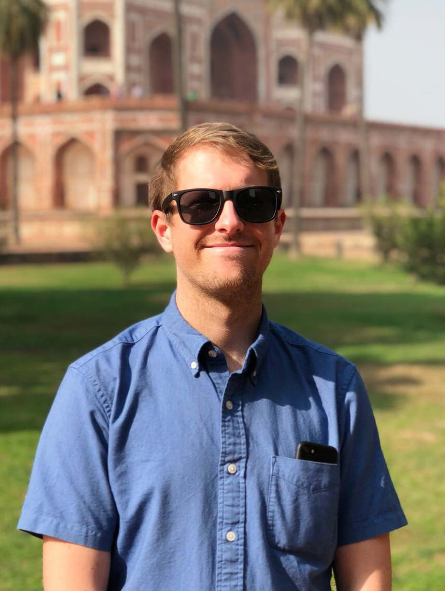

Throughout my education and career, I have always held a strong passion in designing for the well being of others. Since starting at Harvard University's Graduate School of Design, I've developed a more focused interest in the emerging relationships between design, technology, and public health.
- Education
-
Harvard University Graduate School of Design
Master in Design Studies Risk + Resilence
August 2016 - May 2018
Auburn University College of Architecture
Bachelor of Architecture
August 2007 - May 2012
- Skills
-
Design
- Architecture
- Graphic
- Technology
- Research
- Teaching
Technical
- Microsoft Office
- Adobe Creative Suite
- AutoDesk
- GIS
- Sketchup
- Rhino
- Processing | P5
- HTML | CSS | Javascript
- Fabrication
- Sketching
- Professional
Experience
-
Shepley Bulfinch
Junior Architect - Boston, MA - Sept 2012-July 2016
- Schematic and Conceptual Design
- Construction Documentation
- Project Coordination
- Material and Contextual Research
- Humanitarian Design for Healthcare and Educational Facilities
Alta Planning + Design
Hubway Launch Team - Boston, MA - Summer 2011
- Assembled and Deployed Bike Share Stations
- Edited Map Graphics
- Resolved Logistical Issues
- Public Promotion
Whole Town Solutions
Architectural Intern - Roswell, GA - 2006-2007
- Construction Documentation
- Surveys of Existing Buildings
- Material Research
- Town Planning Charettes
- Academic
Experience
-
YouthBuild Boston
Harvard CSFP Fellow - Lead Designer - Boston, MA - Summer 2017
- Led a summer studio for local high school students
- Taught design thinking, design research, site analysis, hand drawing, model making, and computer software skills
Boston Architecural College
City Lab Co-Instructor - Boston, MA - 2013-2014
- Co-instructed an undergraduate intro course on urban design thinking, analyzing, and drawing for three semesters
Auburn University Rural Studio
Student - Newbern, AL - 2008
- Part of a group of students who designed and built a home for an underserved family in rural Alabama